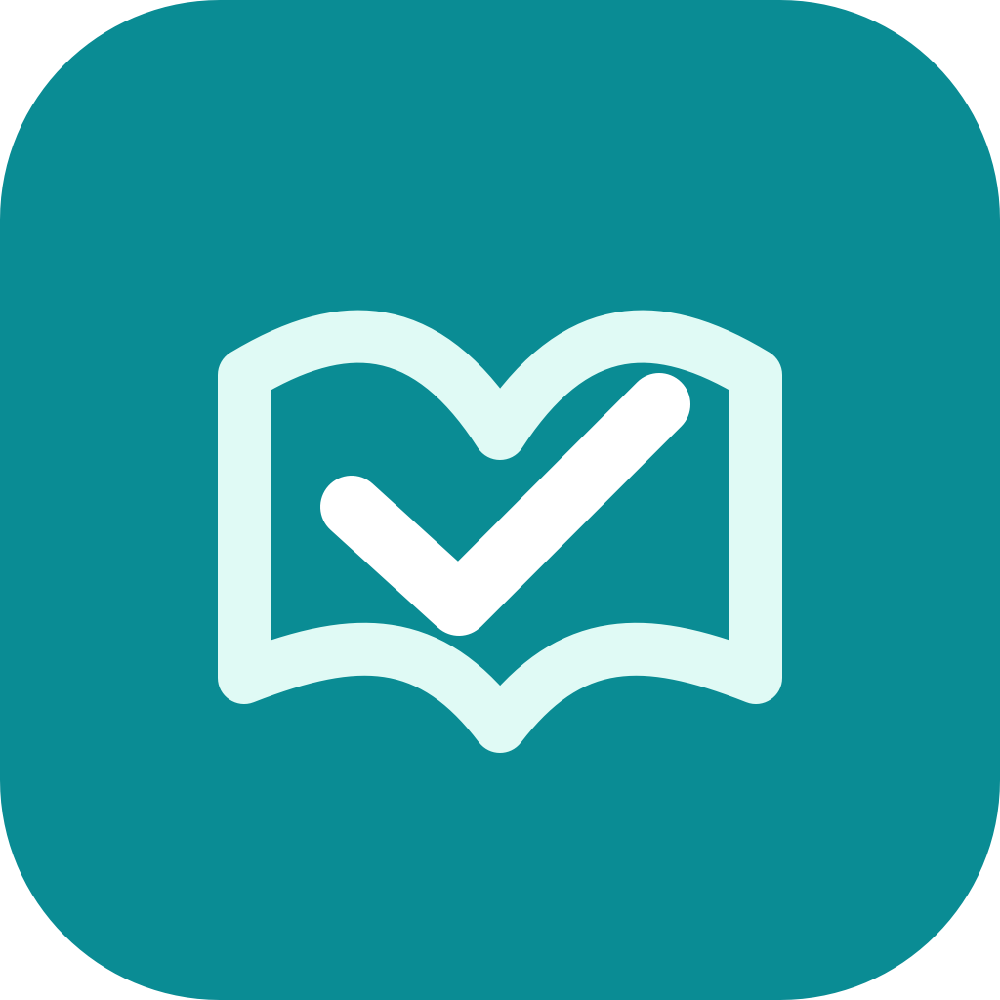

家庭教育管理 / iPhone / iPadHome Edu Assistance
Home Edu Assistance 是給家長使用的家庭教育管理 App。它把孩子檔案、每日任務、成長紀錄、家庭筆記、獎懲契約與回顧提醒集中在一起，讓家庭教育不只靠臨時記憶與情緒反應。
它適合想要更有結構地陪孩子練習課業、運動、音樂、興趣與生活習慣的家庭，也適合需要把日常觀察整理成可討論紀錄的家長。
從今天的任務開始
家長可以建立孩子檔案，安排學術、藝術、運動與興趣相關任務，追蹤完成、略過、活動時間與任務平衡。App 也會協助產生今日任務與本機提醒，讓每天的陪伴更容易啟動。
成長、筆記與家庭契約
Home Edu Assistance 可記錄身高、體重、日常觀察、家庭備註，以及親子之間約定的目標、獎勵、後果與期限。這些資料讓家長能回頭看見變化，而不是只記得最近一次衝突或表現。
家長主控，孩子可選擇參與
Parent App 是主要管理體驗；Child Companion 則是選用的孩子端模式，讓孩子查看自己的任務、標記進度與回饋狀態。若需要，家長可使用附近裝置核准與 recovery code 管理孩子模式解鎖。
AI Lab：低壓力的教育建議
AI Lab 使用裝置端 Apple Intelligence 與 Foundation Models，在家長同意教育建議邊界後，根據孩子資料、任務完成度、日常訓練筆記、家庭備註與契約，提供觀察式、低壓力、可執行的家庭教育建議。
功能重點
- 孩子檔案、家庭成員與 iCloud 家庭分享設計
- 每日任務、活動時間、完成狀態與平衡摘要
- 身高、體重與 HealthKit 匯入輔助
- 家庭備註、獎懲契約與回顧提醒
- 可選擇的 Child Companion 與附近家長核准
- 裝置端 AI Lab 教育分析與對話紀錄
- 依孩子任務內容推薦相關學習 App
隱私與使用邊界
Home Edu Assistance 以本機資料為核心，不需要建立開發者營運的帳號。相機、聯絡人、HealthKit、iCloud 分享、本機網路與通知等功能都以使用者授權與系統設定為準。AI Lab 提供的是教育觀察與家庭策略參考，不是醫療、心理診斷或正式教育評量。
Home Edu Assistance
Home Edu Assistance is a family education management app for parents. It brings child profiles, daily tasks, growth records, family notes, reward contracts, and review reminders into one place, so family education is not driven only by memory or emotion in the moment.
It is designed for families who want more structure around schoolwork, sports, music, interests, and everyday habits, and for parents who want daily observations to become records that can be reviewed and discussed.
Start from Today's Tasks
Parents can create child profiles, plan academic, arts, sports, and interest tasks, and track completion, skipped tasks, activity time, and balance. The app also helps generate today's tasks and local reminders so routines are easier to start.
Growth, Notes, and Family Contracts
Home Edu Assistance can record height, weight, daily observations, family notes, and agreed goals, rewards, consequences, and deadlines. These records help parents review change over time instead of reacting only to the latest conflict or performance.
Parent-Led, With Optional Child Participation
The Parent App is the main management experience. The optional Child Companion mode lets a child view tasks, mark progress, and send feedback. When needed, nearby parent approval and a recovery code can manage child-mode unlocks.
AI Lab for Low-Pressure Education Suggestions
AI Lab uses on-device Apple Intelligence through Foundation Models after the parent accepts the education-advice boundary. It can provide observation-based, low-pressure, actionable family education suggestions from child data, task completion, practice notes, family notes, and contracts.
Highlights
- Child profiles, household members, and iCloud family sharing design
- Daily tasks, activity time, completion state, and balance summaries
- Height, weight, and optional HealthKit import support
- Family notes, reward contracts, and review reminders
- Optional Child Companion and nearby parent approval
- On-device AI Lab education analysis and conversation history
- Related learning app recommendations based on task content
Privacy and Boundaries
Home Edu Assistance is designed around local data and does not require a developer-operated account. Camera, contacts, HealthKit, iCloud sharing, local network, and notifications depend on user permission and system settings. AI Lab suggestions are for educational observation and family strategy only; they are not medical, psychological, or formal educational assessments.